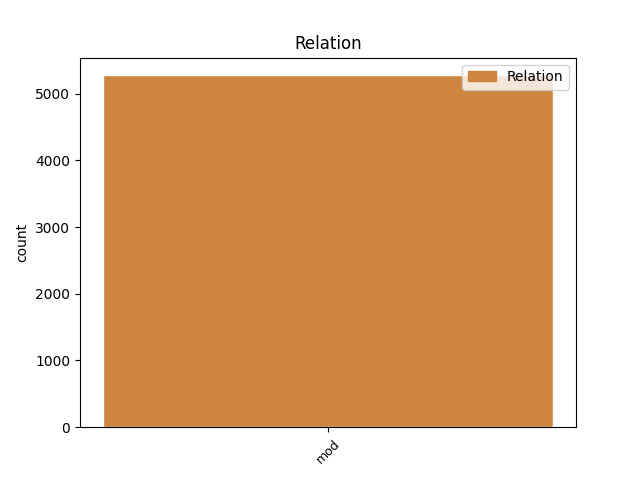
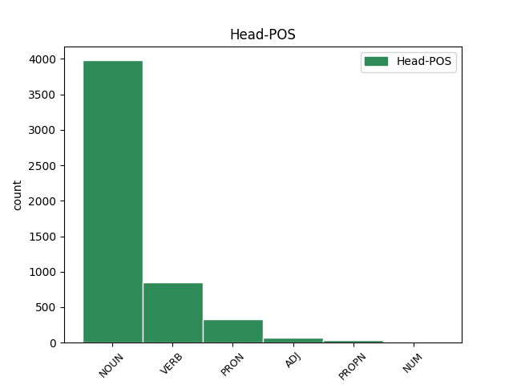
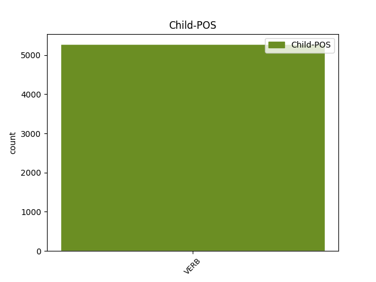

Distribution of features within this leaf



Agreement Rules sorted by frequency.
- When the dependent token is the modifer(mod) of the head token, and the head token is NOUN and the dependent token is VERB.
1 unde _ _ _ _ 0 _ _ _
2 videmus _ _ _ _ 0 _ _ _
3 quod _ _ _ _ 0 _ _ _
4 forma _ _ _ _ 0 _ _ _
5 mixti misceo VERB K2|modM|tem4|grp1|casB|gen3|vgr1 Aspect=Perf|Case=Gen|Degree=Pos|Gender=Neut|Number=Sing|Tense=Past|VerbForm=Part|Voice=Pass 6 mod _ _
6 corporis corpus NOUN C1|grn1|casB|gen3 Case=Gen|Degree=Pos|Gender=Neut|Number=Sing 0 _ _ _
7 habet _ _ _ _ 0 _ _ _
8 aliquam _ _ _ _ 0 _ _ _
9 operationem _ _ _ _ 0 _ _ _
10 quae _ _ _ _ 0 _ _ _
11 non _ _ _ _ 0 _ _ _
12 causatur _ _ _ _ 0 _ _ _
13 ex _ _ _ _ 0 _ _ _
14 qualitatibus _ _ _ _ 0 _ _ _
15 elementaribus _ _ _ _ 0 _ _ _
16 . _ _ _ _ 0 _ _ _
1 dato do VERB J2|modM|tem4|grp1|casF|gen3 Aspect=Perf|Case=Abl|Degree=Pos|Gender=Neut|Number=Sing|Tense=Past|VerbForm=Part|Voice=Pass 17 mod _ _
2 etiam _ _ _ _ 0 _ _ _
3 quod _ _ _ _ 0 _ _ _
4 anima _ _ _ _ 0 _ _ _
5 esset _ _ _ _ 0 _ _ _
6 ex _ _ _ _ 0 _ _ _
7 materia _ _ _ _ 0 _ _ _
8 et _ _ _ _ 0 _ _ _
9 forma _ _ _ _ 0 _ _ _
10 composita _ _ _ _ 0 _ _ _
11 , _ _ _ _ 0 _ _ _
12 ut _ _ _ _ 0 _ _ _
13 quidam _ _ _ _ 0 _ _ _
14 dicunt _ _ _ _ 0 _ _ _
15 , _ _ _ _ 0 _ _ _
16 adhuc _ _ _ _ 0 _ _ _
17 oporteret oportet VERB K3|modB|tem2|gen6 Aspect=Imp|Mood=Sub|Number=Sing|Person=3|Tense=Imp|VerbForm=Fin|Voice=Act 0 _ _ _
18 ponere _ _ _ _ 0 _ _ _
19 eam _ _ _ _ 0 _ _ _
20 incorruptibilem _ _ _ _ 0 _ _ _
21 . _ _ _ _ 0 _ _ _
1 unde _ _ _ _ 0 _ _ _
2 post _ _ _ _ 0 _ _ _
3 verba _ _ _ _ 0 _ _ _
4 praemissa _ _ _ _ 0 _ _ _
5 , _ _ _ _ 0 _ _ _
6 philosophus _ _ _ _ 0 _ _ _
7 concludit _ _ _ _ 0 _ _ _
8 quod _ _ _ _ 0 _ _ _
9 in _ _ _ _ 0 _ _ _
10 his _ _ _ _ 0 _ _ _
11 quae _ _ _ _ 0 _ _ _
12 sunt _ _ _ _ 0 _ _ _
13 composita _ _ _ _ 0 _ _ _
14 ex _ _ _ _ 0 _ _ _
15 materia _ _ _ _ 0 _ _ _
16 et _ _ _ _ 0 _ _ _
17 forma _ _ _ _ 0 _ _ _
18 , _ _ _ _ 0 _ _ _
19 nulla _ _ _ _ 0 _ _ _
20 est _ _ _ _ 0 _ _ _
21 alia _ _ _ _ 0 _ _ _
22 causa _ _ _ _ 0 _ _ _
23 nisi _ _ _ _ 0 _ _ _
24 movens _ _ _ _ 0 _ _ _
25 ex _ _ _ _ 0 _ _ _
26 potestate _ _ _ _ 0 _ _ _
27 ad _ _ _ _ 0 _ _ _
28 actum _ _ _ _ 0 _ _ _
29 , _ _ _ _ 0 _ _ _
30 quaecumque _ _ _ _ 0 _ _ _
31 vero _ _ _ _ 0 _ _ _
32 non _ _ _ _ 0 _ _ _
33 habent habeo VERB K3|modA|tem1|gen9 Mood=Ind|Number=Plur|Person=3|Tense=Pres|VerbForm=Fin|Voice=Act 36 mod _ _
34 materiam _ _ _ _ 0 _ _ _
35 , _ _ _ _ 0 _ _ _
36 omnia omnis PRON C1|grn1|casJ|gen3 Case=Nom|Degree=Pos|Gender=Neut|Number=Plur|PronType=Ind 0 _ _ _
37 simpliciter _ _ _ _ 0 _ _ _
38 sunt _ _ _ _ 0 _ _ _
39 quod _ _ _ _ 0 _ _ _
40 vere _ _ _ _ 0 _ _ _
41 entia _ _ _ _ 0 _ _ _
42 aliquid _ _ _ _ 0 _ _ _
43 . _ _ _ _ 0 _ _ _
1 sicut _ _ _ _ 0 _ _ _
2 etiam _ _ _ _ 0 _ _ _
3 et _ _ _ _ 0 _ _ _
4 forma _ _ _ _ 0 _ _ _
5 coloris _ _ _ _ 0 _ _ _
6 in _ _ _ _ 0 _ _ _
7 pariete _ _ _ _ 0 _ _ _
8 habet _ _ _ _ 0 _ _ _
9 esse _ _ _ _ 0 _ _ _
10 naturale _ _ _ _ 0 _ _ _
11 , _ _ _ _ 0 _ _ _
12 in _ _ _ _ 0 _ _ _
13 medio medius ADJ B1|grn1|casF|gen3 Case=Abl|Degree=Pos|Gender=Neut|Number=Sing 0 _ _ _
14 autem _ _ _ _ 0 _ _ _
15 deferente defero VERB N2|modD|tem1|grp1|casF|gen3 Case=Abl|Degree=Pos|Gender=Neut|Number=Sing|Tense=Pres|VerbForm=Part|Voice=Act 13 mod _ _
16 habet _ _ _ _ 0 _ _ _
17 esse _ _ _ _ 0 _ _ _
18 intentionale _ _ _ _ 0 _ _ _
19 tantum _ _ _ _ 0 _ _ _
20 . _ _ _ _ 0 _ _ _
1 quia _ _ _ _ 0 _ _ _
2 igitur _ _ _ _ 0 _ _ _
3 mundus _ _ _ _ 0 _ _ _
4 non _ _ _ _ 0 _ _ _
5 est _ _ _ _ 0 _ _ _
6 casu _ _ _ _ 0 _ _ _
7 factus _ _ _ _ 0 _ _ _
8 , _ _ _ _ 0 _ _ _
9 sed _ _ _ _ 0 _ _ _
10 est _ _ _ _ 0 _ _ _
11 factus _ _ _ _ 0 _ _ _
12 a _ _ _ _ 0 _ _ _
13 deo deus PROPN F1|grn1|casF|gen1 Case=Abl|Degree=Pos|Gender=Masc|Number=Sing 0 _ _ _
14 per _ _ _ _ 0 _ _ _
15 intellectum _ _ _ _ 0 _ _ _
16 agente ago VERB L2|modD|tem1|grp1|casF|gen1 Case=Abl|Degree=Pos|Gender=Masc|Number=Sing|Tense=Pres|VerbForm=Part|Voice=Act 13 mod _ SpaceAfter=No
17 , _ _ _ _ 0 _ _ _
18 ut _ _ _ _ 0 _ _ _
19 infra _ _ _ _ 0 _ _ _
20 patebit _ _ _ _ 0 _ _ _
21 , _ _ _ _ 0 _ _ _
22 necesse _ _ _ _ 0 _ _ _
23 est _ _ _ _ 0 _ _ _
24 quod _ _ _ _ 0 _ _ _
25 in _ _ _ _ 0 _ _ _
26 mente _ _ _ _ 0 _ _ _
27 divina _ _ _ _ 0 _ _ _
28 sit _ _ _ _ 0 _ _ _
29 forma _ _ _ _ 0 _ _ _
30 , _ _ _ _ 0 _ _ _
31 ad _ _ _ _ 0 _ _ _
32 similitudinem _ _ _ _ 0 _ _ _
33 cuius _ _ _ _ 0 _ _ _
34 mundus _ _ _ _ 0 _ _ _
35 est _ _ _ _ 0 _ _ _
36 factus _ _ _ _ 0 _ _ _
37 . _ _ _ _ 0 _ _ _
1 sequeretur _ _ _ _ 0 _ _ _
2 enim _ _ _ _ 0 _ _ _
3 , _ _ _ _ 0 _ _ _
4 ut _ _ _ _ 0 _ _ _
5 ipse _ _ _ _ 0 _ _ _
6 dicit _ _ _ _ 0 _ _ _
7 , _ _ _ _ 0 _ _ _
8 quod _ _ _ _ 0 _ _ _
9 subjectum _ _ _ _ 0 _ _ _
10 et _ _ _ _ 0 _ _ _
11 forma _ _ _ _ 0 _ _ _
12 essent _ _ _ _ 0 _ _ _
13 duo duo NUM F1|grn1|casJ|gen3 Case=Nom|Degree=Pos|Gender=Neut|Number=Plur|NumType=Card 0 _ _ _
14 distincta distinguo VERB L2|modM|tem4|grp1|casJ|gen3 Aspect=Perf|Case=Nom|Degree=Pos|Gender=Neut|Number=Plur|Tense=Past|VerbForm=Part|Voice=Pass 13 mod _ SpaceAfter=No
15 , _ _ _ _ 0 _ _ _
16 ex _ _ _ _ 0 _ _ _
17 quibus _ _ _ _ 0 _ _ _
18 non _ _ _ _ 0 _ _ _
19 fieret _ _ _ _ 0 _ _ _
20 unum _ _ _ _ 0 _ _ _
21 , _ _ _ _ 0 _ _ _
22 si _ _ _ _ 0 _ _ _
23 essent _ _ _ _ 0 _ _ _
24 termini _ _ _ _ 0 _ _ _
25 diversarum _ _ _ _ 0 _ _ _
26 actionum _ _ _ _ 0 _ _ _
27 . _ _ _ _ 0 _ _ _
Disagree Examples:
1 continuatio continuatio NOUN C1|grn1|casA|gen2 Case=Nom|Degree=Pos|Gender=Fem|Number=Sing 0 _ _ _
2 sequentium sequor VERB L2|modM|tem1|grp1|casK|gen3|vgr1 Case=Gen|Degree=Pos|Gender=Neut|Number=Plur|Tense=Pres|VerbForm=Part|Voice=Pass 1 mod _ _
3 ad _ _ _ _ 0 _ _ _
4 praecedentia _ _ _ _ 0 _ _ _
5 . _ _ _ _ 0 _ _ _
1 unde _ _ _ _ 0 _ _ _
2 , _ _ _ _ 0 _ _ _
3 ad _ _ _ _ 0 _ _ _
4 completam _ _ _ _ 0 _ _ _
5 divinae _ _ _ _ 0 _ _ _
6 veritatis _ _ _ _ 0 _ _ _
7 considerationem _ _ _ _ 0 _ _ _
8 , _ _ _ _ 0 _ _ _
9 restat _ _ _ _ 0 _ _ _
10 nunc _ _ _ _ 0 _ _ _
11 de _ _ _ _ 0 _ _ _
12 secunda _ _ _ _ 0 _ _ _
13 operatione operatio NOUN C1|grn1|casF|gen2|comH|vgr1 Case=Abl|Degree=Pos|Gender=Fem|Number=Sing 0 _ _ _
14 tractare _ _ _ _ 0 _ _ _
15 , _ _ _ _ 0 _ _ _
16 per _ _ _ _ 0 _ _ _
17 quam _ _ _ _ 0 _ _ _
18 scilicet _ _ _ _ 0 _ _ _
19 res _ _ _ _ 0 _ _ _
20 producuntur produco VERB N3|modJ|tem1|gen9 Mood=Ind|Number=Plur|Person=3|Tense=Pres|VerbForm=Fin|Voice=Pass 13 mod _ _
21 et _ _ _ _ 0 _ _ _
22 gubernantur _ _ _ _ 0 _ _ _
23 a _ _ _ _ 0 _ _ _
24 deo _ _ _ _ 0 _ _ _
25 . _ _ _ _ 0 _ _ _
1 huiusmodi _ _ _ _ 0 _ _ _
2 quidem _ _ _ _ 0 _ _ _
3 divinorum _ _ _ _ 0 _ _ _
4 factorum facio VERB N2|modM|tem4|grp1|casK|gen3 Aspect=Perf|Case=Gen|Degree=Pos|Gender=Neut|Number=Plur|Tense=Past|VerbForm=Part|Voice=Pass 5 mod _ _
5 meditatio meditatio NOUN C1|grn1|casA|gen2|vgr1 Case=Nom|Degree=Pos|Gender=Fem|Number=Sing 0 _ _ _
6 ad _ _ _ _ 0 _ _ _
7 fidem _ _ _ _ 0 _ _ _
8 humanam _ _ _ _ 0 _ _ _
9 instruendam _ _ _ _ 0 _ _ _
10 de _ _ _ _ 0 _ _ _
11 deo _ _ _ _ 0 _ _ _
12 necessaria _ _ _ _ 0 _ _ _
13 est _ _ _ _ 0 _ _ _
14 . _ _ _ _ 0 _ _ _
1 primo _ _ _ _ 0 _ _ _
2 quidem _ _ _ _ 0 _ _ _
3 , _ _ _ _ 0 _ _ _
4 quia _ _ _ _ 0 _ _ _
5 ex _ _ _ _ 0 _ _ _
6 factorum facio VERB N2|modM|tem4|grp1|casK|gen3 Aspect=Perf|Case=Gen|Degree=Pos|Gender=Neut|Number=Plur|Tense=Past|VerbForm=Part|Voice=Pass 7 mod _ _
7 meditatione meditatio NOUN C1|grn1|casF|gen2|comH Case=Abl|Degree=Pos|Gender=Fem|Number=Sing 0 _ _ _
8 divinam _ _ _ _ 0 _ _ _
9 sapientiam _ _ _ _ 0 _ _ _
10 utcumque _ _ _ _ 0 _ _ _
11 possumus _ _ _ _ 0 _ _ _
12 admirari _ _ _ _ 0 _ _ _
13 et _ _ _ _ 0 _ _ _
14 considerare _ _ _ _ 0 _ _ _
15 . _ _ _ _ 0 _ _ _
1 unde _ _ _ _ 0 _ _ _
2 ex _ _ _ _ 0 _ _ _
3 factorum facio VERB N2|modM|tem4|grp1|casK|gen3 Aspect=Perf|Case=Gen|Degree=Pos|Gender=Neut|Number=Plur|Tense=Past|VerbForm=Part|Voice=Pass 4 mod _ _
4 consideratione consideratio NOUN C1|grn1|casF|gen2|comH|vgr1 Case=Abl|Degree=Pos|Gender=Fem|Number=Sing 0 _ _ _
5 divinam _ _ _ _ 0 _ _ _
6 sapientiam _ _ _ _ 0 _ _ _
7 colligere _ _ _ _ 0 _ _ _
8 possumus _ _ _ _ 0 _ _ _
9 , _ _ _ _ 0 _ _ _
10 sicut _ _ _ _ 0 _ _ _
11 in _ _ _ _ 0 _ _ _
12 rebus _ _ _ _ 0 _ _ _
13 factis _ _ _ _ 0 _ _ _
14 per _ _ _ _ 0 _ _ _
15 quandam _ _ _ _ 0 _ _ _
16 communicationem _ _ _ _ 0 _ _ _
17 suae _ _ _ _ 0 _ _ _
18 similitudinis _ _ _ _ 0 _ _ _
19 sparsam _ _ _ _ 0 _ _ _
20 . _ _ _ _ 0 _ _ _